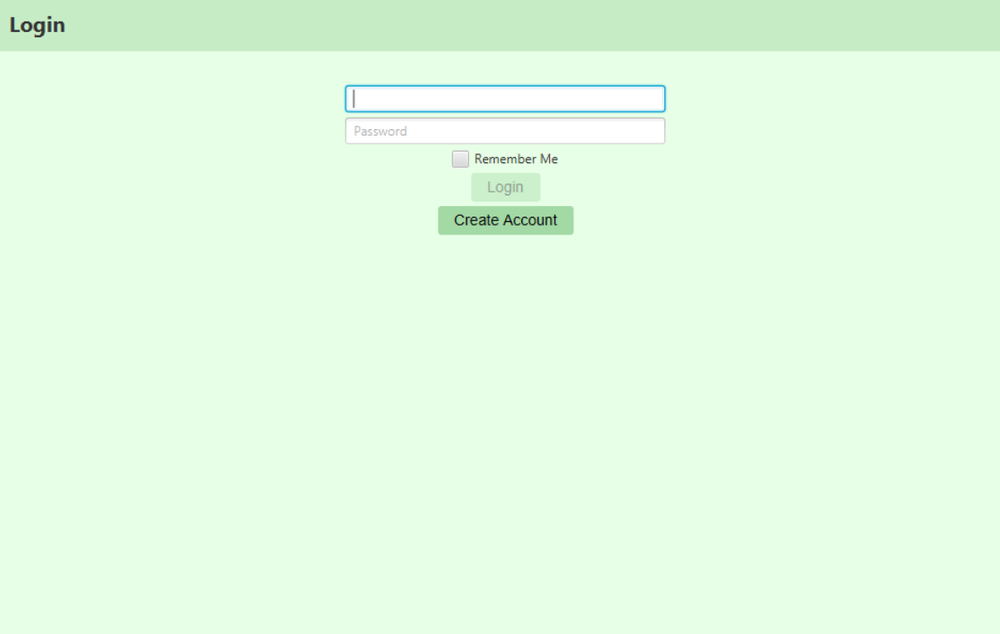

Project 1: CSE 110 Pantry Pal
This project involved using OpenAI's APIs for GPT, DALLE, and Whisper to generate recipes for users when they prompted the application with a list of ingredients.
View on GitHub
Project 2: CSE 158R Recommender Systems Project
A recommender systems project where we implemented and finetuned our own recommender system models and compared them to prebuilt models from Python libraries such as Tensorflow and Surprise.
View on GitHub
Project 3: COGS 108 Data Science Project
This project focused on applying data science techniques to measure and predict student satisfaction with a course using data scraped from CAPES.
View on GitHub